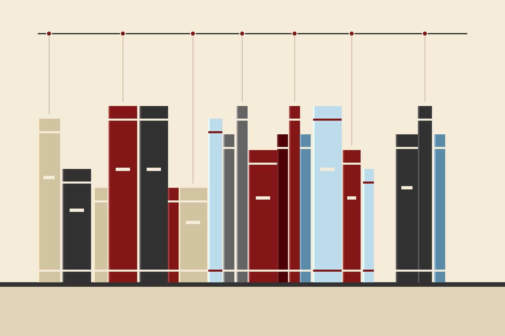

Personal · Reading and research
American Political History Case Study
A running study of how American political institutions, coalitions and ideas developed, read president by president.
- Started
- 2020 (ongoing)
- Sources
- Biographies, autobiographies, primary sources and the surrounding history
- Practice
- At least an hour of reading a day
- Notes
- Notes app and a pocket notebook, with AI tools to help digest each book

How it started
In 2020 I read and listened to Barack Obama's autobiography and enjoyed it enough to set myself a goal. I would read a biography or autobiography of every president, along with whatever else I needed to understand what was happening in the country and the world during their time in office.
Starting with the precedents
I began by researching George Washington and reading some of his letters, and they left me with questions about what had happened in the English colonies before his time. That led me back to 1619, which looked like the right first book for understanding how American settlers began this experiment, and from there to the colonial period and Magna Carta. American law and politics rest heavily on precedent, so I decided to learn the precedents first and read forward from there.
How it works
I read for at least an hour a day, sometimes more and sometimes less. My notes live in the Notes app and in a physical notebook I carry with me, and their structure changes with the book. When I can, I use AI tools to help me digest and test my understanding of what I have read. The sources range from biographies and autobiographies to letters and other primary documents. The list is chronological, it is still growing, and it will keep growing until I finish the presidents and then as new ones are elected.
What it has taught me
The biggest lesson is that the Founding Fathers affect day-to-day life in 2026 far more than most people realize. Reading across eras has also changed how I think about leadership, institutions and decision-making.
A research project, not a position
This is a research project, not an alignment with one set of ideals. The list deliberately includes authors and presidents from across the political spectrum, because understanding how a period unfolded requires reading it from more than one side.